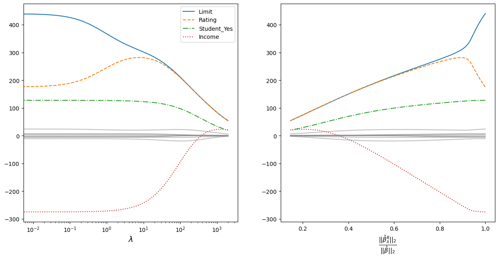

import pandas as pd
import numpy as np
import matplotlib.pyplot as plt
from sklearn.linear_model import Ridge
from sklearn.preprocessing import OneHotEncoder
from IPython.display import clear_outputL2 (Ridge regularisation)
Souces
- https://www.statlearning.com/ 6 глава.
Description
In L2-regularisation, a component is added to the target function of the coefficient estimation method:
\[\lambda\sum_{j=1}^n\beta^2_j\]
Where: - \(\beta_j\) - estimated coefficient; - \(\lambda\) - parameter indicating how much the model should be regularised.
Regression
L2-regularisation combined with a regression model is called ridge regression.
So if we use MSE as a quality function, we will have a modifide function:
\[\sum_{i=1}^n\left(y_i - x_i\beta\right)^2 + \lambda\sum_{j=1}^p\beta^2_j \rightarrow min\]
Where:
- \(n\) - sample size;
- \(p\) - data dimention;
- \(x_i = (x_{i1}, x_{i2}, ..., x_{ip})\) - vector describing the \(i\text{-}th\) observation;
- \(\beta = (\beta_1, \beta_2, ..., \beta_p)\) - vector of coefficient estimates.
Note To perform refularization to regression you need to ensure that your features have the same scaling. Check more here.
Compression of coefficients
Here I reproduce the experiment from the ISLR.
Loading Credit data.
Credit = pd.read_csv("Credit.csv", index_col = 0)
nominal_names = [
"Gender", "Student", "Married", "Ethnicity"
]
ohe = OneHotEncoder(
sparse_output = False, drop = "first"
).fit(
Credit[nominal_names]
)
Credit = pd.concat(
[
pd.DataFrame(
ohe.transform(Credit[nominal_names]),
columns = ohe.get_feature_names_out(),
index= Credit.index
),
Credit.loc[:,~Credit.columns.isin(nominal_names)]
],
axis = 1
)
X = Credit.iloc[:,:-1]
y = Credit.iloc[:, -1]
Credit.head()| Gender_Female | Student_Yes | Married_Yes | Ethnicity_Asian | Ethnicity_Caucasian | Income | Limit | Rating | Cards | Age | Education | Balance | |
|---|---|---|---|---|---|---|---|---|---|---|---|---|
| ID | ||||||||||||
| 1 | 0.0 | 0.0 | 1.0 | 0.0 | 1.0 | 14.891 | 3606 | 283 | 2 | 34 | 11 | 333 |
| 2 | 1.0 | 1.0 | 1.0 | 1.0 | 0.0 | 106.025 | 6645 | 483 | 3 | 82 | 15 | 903 |
| 3 | 0.0 | 0.0 | 0.0 | 1.0 | 0.0 | 104.593 | 7075 | 514 | 4 | 71 | 11 | 580 |
| 4 | 1.0 | 0.0 | 0.0 | 1.0 | 0.0 | 148.924 | 9504 | 681 | 3 | 36 | 11 | 964 |
| 5 | 0.0 | 0.0 | 1.0 | 0.0 | 1.0 | 55.882 | 4897 | 357 | 2 | 68 | 16 | 331 |
We will increase the regularisation parameter and take the values of the coefficients. The procedure is rather long, so it is supposed to perform the calculation and put the results in a file.
# coefs_frame = pd.DataFrame(columns = X.columns)
# stand_X = X/np.sqrt(((X - X.mean())**2).sum()/X.shape[0])
# alphas = np.arange(0, 2000, 0.01)
# int_count = len(alphas)
# for i, alpha in enumerate(alphas):
# clear_output(wait=True)
# print("{}/{}".format(i, int_count))
# coefs_frame.loc[alpha] = pd.Series(
# Ridge(alpha = alpha).fit(stand_X,y).coef_,
# index = X.columns
# )
# coefs_frame.index.name = "alpha"
# coefs_frame.to_csv("l2_regularisation_files/l2_reg_coefs.csv")The obtained values of coefficients are plotted on the graphs.
coefs_frame = pd.read_csv("l2_regularisation_files/l2_reg_coefs.csv", index_col = 0)
plot_var_names = ["Limit", "Rating", "Student_Yes", "Income"]
line_styles = ['-', '--', '-.', ':']
beta_0 = np.sqrt(np.sum(coefs_frame.loc[0]**2))
coefs_frame["beta_i/beta_0"] = coefs_frame.apply(
lambda row: np.sqrt(np.sum(row**2))/beta_0,
axis = 1
)plt.figure(figsize = [15, 7])
plt.subplot(121)
for i in range(len(plot_var_names)):
plt.plot(
coefs_frame.index,
coefs_frame[plot_var_names[i]],
linestyle = line_styles[i]
)
for col in coefs_frame.loc[
:, ~coefs_frame.columns.isin(plot_var_names)
]:
plt.plot(
coefs_frame.index, coefs_frame[col],
color = "gray", alpha = 0.5
)
plt.legend(plot_var_names)
plt.xlabel("$\\lambda$", fontsize = 14)
plt.gca().set_xscale("log")
plt.subplot(122)
for i in range(len(plot_var_names)):
plt.plot(
coefs_frame["beta_i/beta_0"],
coefs_frame[plot_var_names[i]],
linestyle = line_styles[i]
)
for col in coefs_frame.loc[
:, ~coefs_frame.columns.isin(plot_var_names)
]:
plt.plot(
coefs_frame["beta_i/beta_0"], coefs_frame[col],
color = "gray", alpha = 0.5
)
ans = plt.xlabel(
"$\\frac{||\\hat{\\beta}_{\\lambda}^R||_2}{||\\hat{\\beta}||_2}$",
fontsize = 15
)
- The graph on the left shows how the coefficients converge as the regularisation parameter increases. For clarity, a logarithmic scale for the regularisation parameter is taken. The most prominent coefficients are highlighted in colour and line style - the data are standardised, so the scale of the values does not matter;
- The vergence is plotted to the right on the ordinate:
\[\frac{||\hat{\beta}_{\lambda}^R|_2}{||\hat{\beta}||_2}\]
Where: - \(||\beta||_2 = \sqrt{\sum_{j=1}^p \beta^2_j}\) - is the Euclidean distance of the coefficients \(\beta\) from the origin; - \(\hat{\beta}\) - coefficients obtained by the least squares method (equivalent to the coefficients obtained at \(\lambda = 0\)); - \(\hat{\beta}^R_{\lambda}\) - coefficients obtained using regularisation.